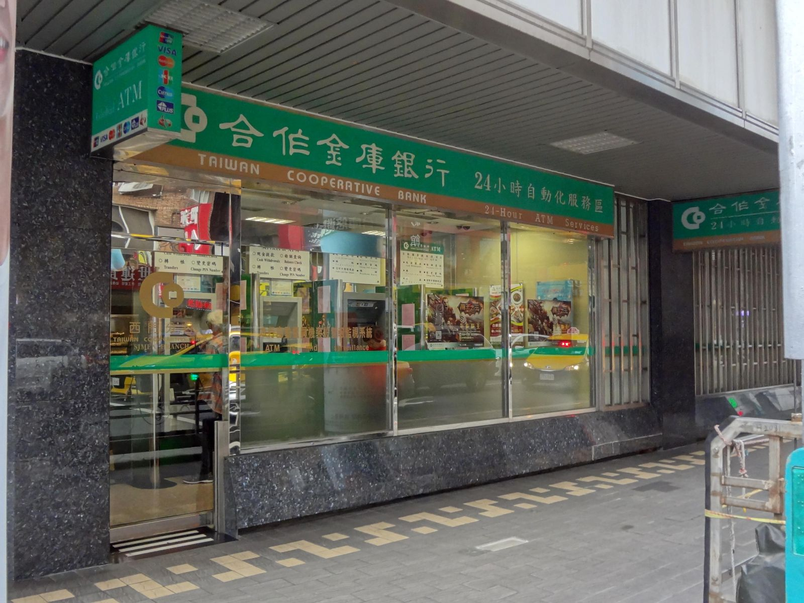

대만 ATM 수수료 없이 뽑으려면? 트래블카드 인출 체크
카드사 몫은 충전과 한도로, ATM 몫은 기기 선택으로 — 두 가지를 따로 챙기면 현금 인출 비용이 확 줄어듭니다.
게시
"트래블카드로 대만 ATM에서 뽑으면 정말 수수료가 없을까?" 결론부터 말하면 대만 ATM 수수료는 두 군데서 붙을 수 있어서, 카드 조건과 ATM 선택을 따로 봐야 해요. 카드사 고객센터 안내와 대만 중앙은행이 공개한 국제카드 인출 ATM 목록을 바탕으로 2026년 10월 기준으로 정리해봤어요.
01 · 대만 ATM 수수료, 어디서 붙는지 한눈에 보기
| 구분 | 누가 받나 | 줄이는 방법 |
|---|---|---|
| 카드사 해외 인출 수수료 | 내 카드를 발급한 카드사 | 트래블카드의 면제 조건(월 한도 등) 안에서 뽑기 |
| 현지 ATM 이용 수수료 | ATM을 운영하는 대만 은행 | 수수료 안내가 뜨면 취소하고 다른 은행 ATM 쓰기 |
| 환율 | 트래블카드는 충전할 때 적용 | 앱에서 대만 달러(TWD)를 미리 충전해 두기 |
트래블카드의 '수수료 무료'는 보통 첫째 줄, 카드사 몫을 말해요. 현지 ATM 운영사가 따로 받는 수수료는 카드사가 대신 없애 주는 게 아니라서, 어떤 ATM에서 뽑느냐가 나머지 절반을 정합니다.
02 · 트래블카드로 대만 ATM 인출 전 확인할 점
예로 트래블월렛 고객센터 안내(2026년 10월 24일 확인)를 보면 조건이 꽤 구체적이에요. 카드마다 조건이 다르니 쓰는 카드 앱의 '해외 ATM 출금' 안내를 같은 항목으로 확인해 보세요.
| 항목 | 트래블월렛 안내 (2026년 10월 24일 확인) |
|---|---|
| 충전 통화 | 출금하는 나라 통화와 같아야 해요. 대만에서는 TWD를 충전해야 뽑을 수 있어요 |
| 카드 종류 | 실물 카드만 가능, 모바일 카드로는 출금 불가 |
| 쓸 수 있는 ATM | VISA 로고가 붙은 해외 ATM |
| 출금 한도 | 1회 US$400, 1일 US$1,000, 1개월 US$2,000 (한국 시간 매월 1일~말일) |
| 카드사 출금 수수료 | 월 US$500 이하 무료, 넘는 금액은 2% |
| 현지 ATM 수수료 | 나라·기기에 따라 현지 ATM 업체 수수료가 생길 수 있음 |
출발 전 TWD 충전 원화나 달러만 있으면 대만 ATM에서 출금이 안 되는 조건이 있어요. 공항에 내리기 전에 앱에서 TWD를 채워 두세요.
월 무료 한도 계산 한 달 무료 한도를 넘기면 수수료가 붙는 카드가 있어요. 여행 중 쓸 현금 총액을 먼저 정하고 그 안에서 뽑으세요.
실물 카드 챙기기 휴대폰 속 모바일 카드로는 ATM 출금이 안 되는 경우가 있으니 실물 카드를 꼭 가져가세요.
03 · 국제카드 되는 대만 ATM 찾는 법
대만 중앙은행과 재금정보공사(財金資訊)가 매달 공개하는 '국제카드 대만 인출 ATM 위치' 목록(2026년 9월 갱신분)에는 약 2만 5천 곳이 올라 있어요. 여행자가 자주 마주치는 곳을 목록 기준으로 정리하면 이렇습니다.
| 장소 | 목록에 나온 ATM (2026년 9월 갱신 기준) |
|---|---|
| 세븐일레븐 | 중국신탁(中國信託) ATM |
| 패밀리마트 | 타이신(台新)·국태세화(國泰世華)·위산(玉山) ATM |
| 하이라이프·OK마트 | 하이라이프는 주로 국태세화, OK마트는 타이신 ATM |
| 타오위안공항 1터미널 입국장 | 대만은행(臺灣銀行)·자오펑(兆豐)은행 ATM |
| 우체국·은행 지점 | 중화우정(우체국) ATM, 각 은행 지점의 24시간 ATM 코너 |

목록에 있어도 모든 카드 브랜드를 받는다는 뜻은 아니에요. 기기나 간판에 내 카드와 같은 로고(VISA·PLUS 또는 Mastercard·Cirrus)가 붙어 있는지 먼저 확인하세요.
04 · 대만 ATM에서 수수료 안내가 뜨면 이렇게
로고 맞는 기기 고르기 카드 뒷면 브랜드와 같은 로고가 붙은 ATM을 고릅니다. 트래블월렛이라면 VISA 로고를 보세요.
수수료 안내 화면 읽기 현지 ATM 수수료가 있는 기기에서는 출금 전에 금액 안내가 나올 수 있어요. 동의하기 전에 금액을 꼭 읽으세요.
붙으면 취소하고 옮기기 수수료가 보이면 취소하고 근처 다른 은행 ATM을 써 보세요. 편의점마다 ATM 은행이 달라 몇 걸음이면 바꿀 수 있어요.
앱 알림으로 확인 출금 뒤 카드 앱 내역에서 인출액과 수수료를 바로 확인하면, 다음 인출 때 어떤 ATM을 쓸지 정하기 쉬워요.
현금이 꼭 필요한 곳은 야시장·노점이에요. 얼마나 뽑을지는 타이베이 가족여행 현금·카드 나누는 법 글을 참고하고, 타이베이 노점 맛집이나 줄 서서 사 먹는 푸저우 스쭈 후추빵처럼 현금을 챙겨 가면 편한 가게를 미리 골라 두세요. 도착하자마자 공항에서 뽑을 계획이라면 타오위안공항 새벽 도착 교통과 대만 eSIM·유심 고르기도 함께 보면 좋아요. 동선은 타이베이 맛집 지도에서 한 번에 볼 수 있어요.
지도에서 현금 챙겨 갈 노점 맛집도 확인해보세요
야시장·노점처럼 현금이 필요한 곳을 미리 찜해 두면 얼마나 뽑을지 정하기 쉬워요.